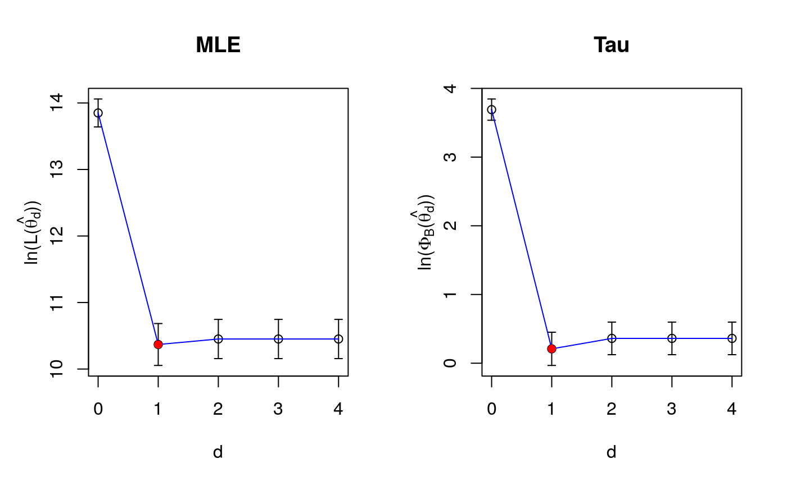

cross_val_pfc.RdComputes the dimension of the sufficient reduction subspace by cross-validation
cross_val_pfc(X, Fy, dmax, aux, grafico = TRUE)
| X | vector of response variables in the inverse model |
|---|---|
| Fy | vector of covariates in the inverse problem, vector containig functions of the response variable in the original problem |
| dmax | maximum value of the dimension to be evaluated |
| aux | list containing the constants for the tau-scale |
| grafico | a logical, if TRUE, shows graphs of the Cross-Validation function versus dimension |
The dimension of the reduction subspace, using both maximum likelihood and robust tau estimators to select is computed using five fold cross validation for the PFC model. See Bergesio et al. (2020).
Computes standard deviations of both objective functions and gives back the smaller value that satisfies the one standard deviation rule from the minimum. See Hastie et al. (2009)
List with the following components
dimension selected by cross-validation using ML estimator
objective function values for the ML estimator, for values of d between 0 and dmax
standard deviation of the objective function for the ML estimator, for values of d between 0 and dmax
dimension selected by cross-validation using tau estimator
objective funcion values for the robust estimator
standard deviation of the objective funcion for the robust estimator
Hastie, T., Tibshirani, R., Friedman, J. H. (2009). The elements of statistical learning: data mining, inference, and prediction. 2nd ed. New York: Springer.
Bergesio, A., Szretter Noste, M. E. and Yohai, V. J. (2020). A robust proposal of estimation for the sufficient dimension reduction problem
p=10 r=2 n=200 mutrue=rep(0,p) gamatrue=as.matrix(c(1,rep(0,p-1))) betatrue=t(as.matrix(c(1,1))) data_sim=generate(p,n,mutrue,gamatrue,betatrue,sigmatrue=1) Fy=data_sim$Fy X=data_sim$X aux=kappa_and_c(p,efficiency=.9) cross_val_pfc(X, Fy, dmax=4, aux, grafico=TRUE)#> $d.crossval.ml #> [1] 1 #> #> $obj.ml #> [1] 13.84940 10.36917 10.45176 10.45176 10.45176 #> #> $obj.ml.sd #> [1] 0.2100719 0.3148652 0.2947118 0.2947118 0.2947118 #> #> $d.crossval.rob #> [1] 1 #> #> $obj.rob #> [1] 3.6907963 0.2089944 0.3610695 0.3610695 0.3610695 #> #> $obj.rob.sd #> [1] 0.1546360 0.2415973 0.2373233 0.2373233 0.2373233 #>